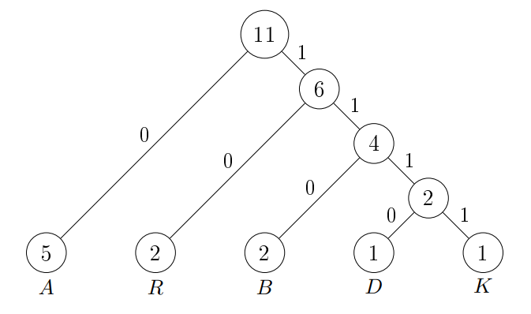

A naiv módszer fix hosszú kódot használt. Ezzel általában nem érhetjük el a
megfelelő tömörítést. Viszont betűnkénti kódolás esetén a változó hosszúságú kód alkalmazása
tekintélyes
megtakarítást eredményez, ha gyakori karaktereknek rövid, ritkán előforduló karaktereknek hosszabb
kódszavakat feleltetünk meg. A Huffman-kódolás egy betűnkénti optimális kódolás, azaz az ilyen
kódolások között a lehető legrövidebb prefixmentes kód érhető el vele adott adat esetén.
A Huffman-kód változó hosszúságú kódot ad, mégis egyértelműen dekódolható.
Ez
azért lehetséges, mert prefixmentes kód (vagy prefix-kód). Ez azt jelenti, hogy egyetlen
karakter kódja sem prefixe semelyik másik karakter kódjának sem. Másképp a kódszavakra igaz, hogy
egyik sem kezdőszelete egy másiknak. Pl.: $\{101, 011, 1010\}$ nem prefixmentes kód, mert az $101$
az
$1010$ kezdőszelete, azaz prefixe.
Kódolás működése:
Olvassuk végig a szöveget és határozzuk meg az egyes karakterekhez tartozó
gyakoriságokat. Hozzunk létre minden karakterhez egy csúcsot és helyezzük el egy minimum prioritásos
sorban a gyakoriságok szerint. Vegyünk ki két csúcsot a prioritásos sorból és hozzunk létre
számukra egy szülő csúcsot. A szülő-gyerek éleket címkézzük, nullával és eggyel. Általában a bal
oldali lesz a $0$ és a jobb oldali az $1$, de ez tetszőleges. Eljárhatunk úgy is, hogy a kisebb
gyakoriságú gyerekhez vezető él legyen a $0$ és a nagyobbikhoz vezető él az $1$. Helyezzük el a
szülő csúcsot a
prioritásos sorba gyerekei gyakoriságának összegét használva kulcsként. Ismételjük meg az előzőeket,
ha több mint egy csúcs szerepel a sorban. Olvassuk ki a karakterekhez tartozó kódszavakat a
kódfából. Olvassuk végig újra a bemenetet és kódoljuk azt karakterenként.
Példa:
Tömörítsük az $ABRAKADABRA$ szöveget. Először számoljuk meg a karakterek
gyakoriságát és ezt helyezzük el egy minimum prioritásos sorban.
$<(D /1), (K/1), (B/2), (R/2), (A/5)>$
Majd vegyük ki a kettő legkisebbet és vonjuk össze őket addig, amíg egy csúcs nem
marad.
$<(DK /2), (B/2), (R/2), (A/5)>$
$<(R /2), (DKB/4), (A/5)>$
$<(A /5), (DKBR/6)>$
$<(DKBRA /11)>$
Ezek alapján felépíthetjük a fát. Balra nullát írunk jobbra egyet.

A kódfából megkaphatjuk a karakterek kódjait, ha a fa gyökerétől kezdve haladunk
lefelé a levelekig.
| Karakter |
Kód |
| $A$ |
$0$ |
| $B$ |
$110$ |
| $D$ |
$1110$ |
| $K$ |
$1111$ |
| $R$ |
$10$ |
Az $ABRAKADABRA$ szöveg Huffman-kódja: $01101001111011100110100$.
Huffmann-kódolás tulajdonságai:
A Huffman-kódolás folyamata általában nem-determinisztikus, azaz több
megoldása is lehet. Egyrészt, ha több azonos gyakoriság van, akkor bármelyiket
választva Huffman-kódolást kapunk. Másrészt a $0$ és $1$ szerepe
felcserélhető a kódfában.
- A tömörítendő fájlt, illetve szöveget kétszer olvassa végig.
- A kódfa szigorúan bináris fa.
- A tömörített fájl a kódfát vagy a kódtáblát is tartalmazza.
- A tömörített kód hossza nem függ a nem-determinisztikus viselkedés feloldásától.
- A Huffman-kódolás optimális a betűnkénti, prefixmentes kódolások között, azaz nem létezik olyan
betűnkénti, prefixmentes kódolás, ami rövidebb kódot eredményezne, mint a Huffman-kódolás.
Kódoláshoz szükséges bitek száma:
A kódoláshoz szükséges bitek száma a következő képlettel számolható ki. Legyen
$c$ egy karakter a $\Sigma$ abc-ben.
$\sum_{c \in \Sigma}$ $c$ előfordulása $\cdot$ $c$ kódjának hossza
Dekódolás működése:
A dekódoláshoz ismernünk kell a kódolt adatot és a kódfát.
Ezek ismeretében a dekódolás is meglehetősen egyszerű prefixmentes kód esetén, mivel nincs olyan
kódszó,
amely kezdőszelete lenne egy másiknak, így egyértelmű, hogy a kódolt állomány melyik kódszóval
kezdődik.
A kitömörítést is karakterenként végezzük. Mindegyik karakter kinyeréséhez a
kódfa gyökerétől indulunk, majd a tömörített kód sorban olvasott bitjeinek hatására $0$ esetén
balra, $1$ esetén jobbra lépünk lefelé a fában (de ez nem-determinisztikus), mígnem levélcsúcshoz
érünk. Ekkor kiírjuk a levelet címkéző karaktert, majd a Huffman-kódban a következő bittől, a
kódfában újra a gyökerétől folytatjuk a kitömörítést, amíg a tömörített kódon végig nem érünk.
Gyakorlati alkalmazása:
A Huffman-kódolást felhasználják szövegek küldésénél, illetve hagyományos
tömörítési
formátumoknál, mint például a GZIP.